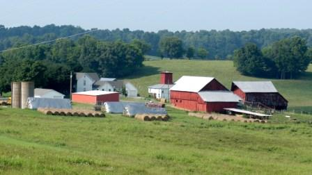

For a brief historical sketch of each farm, click on the farm name.
The following map is for a general geographical understanding. It does not provide the specific locations of the farms because of privacy reasons.
Map Courtesy of Carole Swann, Tennessee Department of Agriculture
Donald Mark Garton
 In August of 1871, Mark Garton, Sr. purchased 170 acres
in the Burns community. Expanding his landholdings to 1000 acres, he and his
wife Elizabeth Greer Garton built a home for their family of ten children
around 1877. Corn, wheat, cattle, hogs, horses, mules, and donkeys were raised
by the Gartons. The family cemetery was established at the time of the
founder’s death.
In August of 1871, Mark Garton, Sr. purchased 170 acres
in the Burns community. Expanding his landholdings to 1000 acres, he and his
wife Elizabeth Greer Garton built a home for their family of ten children
around 1877. Corn, wheat, cattle, hogs, horses, mules, and donkeys were raised
by the Gartons. The family cemetery was established at the time of the
founder’s death. Mark Garton, Jr. and his wife Betty Maybelle Work Garton farmed the 170 acres and were the parents of five
children. At this time, “rock dams were built at the head of the upper bottom
and along the end of lower bottoms to keep Turnbull Creek that surrounds these
Luke Mark Garton, grandson of the founders, and his wife
Mary Jane Noret Garton were also progressive farmers working closely with the
U. T. Extension Service and the U.S.D.A. Soil Conservation Service. Terracing,
waterways, and sowing marginal land in permanent pasture were some of the
practices put into place on the demonstration farm. Garton was recognized in
1963 with an award for his conservation efforts. Mary Jane was active in the
Home Demonstration Club (now FCE) and in the local and
Almost
one hundred years after his great grandparents established the farm, Donald
Mark Garton became the owner of the farm in 1986. The original log barn,
incorporated into a larger barn by Mark Gorton, Jr. in the early 1900s, is
still used today for storing hay to feed cattle raised on the Garton Farm. Mr.
Garton is active in the local livestock association and served as president for
three years. He is also a director of the Tennessee Cattlemen’s Association.
Mr. Garton’s brother, Stanley, and his nephew, Kevin, also help on the family
farm as needed.
Photo: The farm sign frames a picturesque view of the farm.
William J. Stokes

Just North of
Francis Cook Stokes
inherited the farm from his parents in 1916. Married twice, Francis fathered
three children. In 1935 and 1936 his widow, Clara W. Stokes, and children,
William J. Stokes and Jennie Beth Stokes, acquired the property. The farm
products continued to be much the same throughout the twentieth century with
the addition of timber. In 1976, when the farm became one of the first
Tennessee Century Farms, Clara and William J. Stokes managed and operated the
farm where they raised tobacco and cattle. Today, William J. Stokes continues
to produce a tobacco crop, just as his grandfather did, on the farm founded
just before the start of the Civil War.
Photo :
Tractor scene on the Cook’s Stoke Farm. Tractors became a necessity on farms in
the twentieth century.
Johnny and Statia Daniel
Benjamin and Ashley
Daniel
Dairying, long a staple of  operated on a farm established by James Loggins and his wife Nancy
Grimes Loggins on March 11, 1861, just three months before
operated on a farm established by James Loggins and his wife Nancy
Grimes Loggins on March 11, 1861, just three months before
Raised
on the 500 acre farm, William Daniel became the next owner of the
property. Married to Mary Agnes Harris,
the couple had three children, Henry H., Harris Crawford, and Mary
Rebecca. The Daniels “built an impressive
two story home on a hill overlooking the farm.”
On 250 acres they raised timber, tobacco, corn, hay, cattle, mules, and
swine.
Photo :
J.
Just
west of
Dr.
Daniel Rook Leech was the next family owner, operating the farm until his death
in 1904. Dr. Leech “played in important
role in the health of the
In
1911, W. B. Leech sold the farm to his cousin W. Wellington Larkins who made
substantial changes to the farm’s landscape.
He constructed an equipment shed and smokehouse in 1915. The following year he began work on a new
farmhouse which remains an important part of the farm today. The vernacular
house was designed and built by local craftsman “Fate” Allen. A stone fence enclosing the family cemetery
was erected and a turn of the century barn was moved south of the farmhouse
when the state improved and widened Highway 47 in the 1920s. To support the diverse farm operation,
several new outbuildings and a root cellar were added during the 1930s and
1940s.
At
the death of W. Wellington Larkins in 1949, his daughter Elizabeth Larkins
DePriest purchased the shares of her siblings and began operating the farm
along with her husband James DePriest.
Mrs. DePriest, described as a “naturalist” by her friends, is a tireless
advocate of land conservation as well as a keeper of family and community
history. She continues the daily management of the farm, though in 1988 she
conveyed 218 acres to her son J. Wellington DePriest, an engineer with
International Steel based in
Larry Dale Fiser

Located near Cumberland Furnace is the Fiser-Jackson Farm that was
founded in 1900 by J. M. Jackson. The 104 acres produced corn, wheat and
tobacco. J. M. was married to Ada E. Jackson. In 1904, John F. Jackson, a
cousin, acquired the farm. A year later, the first known family house was built
on the property. Under John’s ownership, swine were added to the farm’s
operations. John’s daughter, Maymie
Baker and her husband Hershel Baker were the next owners of the land. In 1955,
the land was acquired by William Fiser, a great nephew of the founder. Married
to Mary Annie Fiser, the couple had two children. On the farm, they raised
corn, tobacco, cattle and hogs. Today, the farm is owned by Larry Dale Fiser
who, with his cousin Randy Simpkins, manages the farm operations.
Photo:
Cattle and Hay Barn on the Fiser-Jackson Farm.
Robert H. and
Across  Wall settled. The
parents of 13 children, the Walls eventually added another 309 acres in 1882 on
which they raised corn, tobacco, sheep, and swine. Their son, Herman Burney Wall, became the
next owner. He and his wife Hattie
Groves Wall had 9 children. A daughter, Edna Wall Harrell her husband S. H.
Harrell, and their son, Robert H. Harrell became the next owners of
the farm.
Wall settled. The
parents of 13 children, the Walls eventually added another 309 acres in 1882 on
which they raised corn, tobacco, sheep, and swine. Their son, Herman Burney Wall, became the
next owner. He and his wife Hattie
Groves Wall had 9 children. A daughter, Edna Wall Harrell her husband S. H.
Harrell, and their son, Robert H. Harrell became the next owners of
the farm.
Robert
H. Harrell, who worked for General Motors in
Photo: A
rare photograph of matriarch Margaret Proctor Wall.
Maria Miller Freeman
Kay Miller Waters

Augustus
E. C. and Elizabeth Goan Miller established a farmstead three miles north of
Lorenzo Dowl Miller, son of the founders, became the next owner of the
farm. Married to Barbara Schmitz, the
Millers had six children, Myrtle, Maggie,
For
the past seventy years, generations of women have owned and managed Hickory
Hill Farm. Beginning in 1934, the farm became the property of sisters Lola and
Elizabeth Miller Chapman. Successfully
managing the farm through the Great Depression as well as World War II, the
Miller Farm first received electrical power in 1941. Over the next six decades,
the farm produced fruits, corn, tobacco, vegetables, and sileage as well as
sheep, horses, and cattle. Miss Miller
and Mrs. Chapman applied for Century Farm certification of their family farm in
1985. At that time, Miss Miller indicated that the row crops were less
emphasized and the focus was on producing better beef cattle. Today, the 250 acre farm continues to produce
tobacco, hay, and cattle and is the legal responsibility of owners Maria Miller
Freeman of Knoxville and Kay Miller Waters who lives in
Photo: A
concrete silo (1913) and barn sit just off busy State Highway 48N which was
built through Hickory Hill Farm in 1929.
Sue Berry
Pat Berry
Peggy Berry
Erma Dean
Of the nearly 1000 Century Farms certified in Tennessee,
more than half have been owned and
operated by women at some time in their history. The Holland Berry Farm, four miles north of  Berry Sears, the great-great
granddaughters of the founders of their family farm. William and Mandy Hudson Berry, established a
farm in 1873 on property that was part of acreage belonging to Mandy’s family.
John Berry inherited the farm from his parents in 1894. He and his wife Susan Araminta relied on
tobacco and dairy products for income to support their eight children.
Berry Sears, the great-great
granddaughters of the founders of their family farm. William and Mandy Hudson Berry, established a
farm in 1873 on property that was part of acreage belonging to Mandy’s family.
John Berry inherited the farm from his parents in 1894. He and his wife Susan Araminta relied on
tobacco and dairy products for income to support their eight children.
Today the women of Holland Berry Farm, all born in an
upstairs bedroom of the 1916 house, see to the daily management of the
farm. They have a vegetable garden and
lease acreage to neighboring farmers for hay, tobacco, and cattle. Much of the
140 acres is forested. The buildings are
well maintained and some have been adapted for other uses including the “milk
parlor” which has found new life as an exercise room. The
Photo: The
Berry Sisters were all born in an upstairs bedroom of the 1916 house.
Agnes Hunter Powell

One of the “charter” Century Farms
registered in 1976 by Agnes Hunter Powell of Cumberland Furnace, the Hunter
Farm was in operation by 1847. Allan and
Margarette Hunter and their two children lived on the 202 acres raising
tobacco, corn, vegetables, beef cattle, and swine. James hunter acquired 185 acres from his
parents on which he and his wife, Sarah Bull Hunter, lived and raised eight
children. The land was sold to J.H.
Hunter in 1905, and he farmed the land until 1927 when he sold it to A.D.
Hunter.
Agnes Hunter, sister of A.D.
Hunter, and her husband, Melburn F. Powell, purchased her family’s farm in
1941. Agnes, who was not raised on the
farm bur often visited her grandparents who lived there, explains that the land
was “very run down when we bought it, and we had to reclaim the fields.” Over the years, fighting against erosion and
neglect, the Powells made “every inch of the land tillable except the
woodland.” They produced hay, beef
cattle, vegetables, and tobacco. Mrs.
Powell recalls that her father, Dan Hunter, helped to build the L&N
Railroad spur to Cumberland Furnace through the family farm. He lived to see the rails taken up and a
paved road built on the railroad bed.
The Hunter Farm was recognized with the Dickson County Soil Conservation
Home of the Year Award in 1975 and the Farm Leadership Award from the Dickson
County Chamber of Commerce in 1985.
At the age of 94, Mrs. Powell continues
to manage the farm, on which hay and timber are produced and the tobacco
allotment is leased. Mrs. Powell reports
that she could have sold the farm many time, but “that wasn’t what I had in
mind.” She has fond memories of good
times on the farm, especially when growing up and later when working the farm
with her late husband. She sums up her
love of the land saying “I thank God so much for giving us this speck of earth
to be stewards over while we lived here.”
Photo: The farm lane leads to the hay and stock
barn.
Leslie
D. Larkins, Sr.
Founded in 1787 by John Larkins of
North Carolina, this family farm is the oldest Century Farm in Dickson County
and ranks as the tenth oldest in the state. Located about 5 miles west of White
Bluff, Larkins, a Revolutionary War veteran and also the first Treasurer of
Dickson County, established the farm on 1000 acres about 5 miles west of where
the town of White Bluff is now located.
Married to Sarah McAdow, the Larkins had four sons who received shares
of the farm. James Larkins inherited his
250 acres in 1805. Here he raised corn,
hay, wheat, and cattle. While his wife’s
name is not known, their three children are identified as Calvin, Acie, and
Margaret.
The property has been worked and
maintained by successive generations through both good and difficult
times. Leslie D. Larkins, Sr., the fifth
generation owner, acquired 215 acres in 1940.
The elder Larkins and his son, L. D., Jr and his wife Jean nominated the
farm to be a Century Farm in 1976.
Today, the sixth and seventh generations of Larkins also live on the
farm where the family raises cattle, corn, wheat, and soybeans. Not only is this a busy twenty-first century farm
family, but the Larkins appreciate and work to preserve their history and the
rural landscape which has been in their family longer than Tennessee has been a
state.
Jewell Loggins

Thomas Jefferson Loggins and
Annie Daniel Loggins founded the Loggins farm in 1898. Located north of Burns,
the 100 acres produced corn, wheat, hay, cotton, cattle and hogs. The couple
had three children, Richard, Dorie, and
Clarence.
In 1950, Clarence acquired the land.
During his ownership, he raised much the same livestock and crops as his
parents. Clarence married to Irene
Estes and the couple had two children.
In 1993, Jewell Loggins, the
grandson of the founders became the third generation to own the farm. Today, Jewell works the land and produces
hay, timber, corn and truck farming. In
addition to managing the farm, Jewell has been a member of the Dickson County
Farm Bureau since 1959 and he served as the director for two years. Jewell lives on the farm with his wife,
Madolyn Johnson Loggins. Daughter Laura
Loggins Travis, her husband Brian Travis, and their sons also live on the
farm. The farm has many structures such
as a barn, a corn crib, a grain building, a wood shed, a chicken house and the
farm house that were built by previous generations of the Loggins family.
Photo: Landscape Scene and Outbuildings on the Loggins Farm.
James A. and Joyce Miller

While many Century Farms owners trace
their lineage to the thousands of Scots-Irish immigrants that settled
A Pennsylvania-Deutsche bank barn was
built in 1890 to take advantage of the natural topography. The first floor and loft are easily
accessible from the top of the rise while the ground floor is reached from the
fields below. Built as a hog barn, it has served many uses over the years. A second barn built during the same period
for hay and mules also has elements that reflect the founder’s ethnic
origins. Like most successful farmers,
the Millers have diversified their operations over the years to accommodate
changing markets and to take advantage of new and improved technology. Around
1900, the Millers added honeybees and sorghum cane to their inventory. Then
during the 1930s, production shifted to wheat.
The family participated in federal conservation programs through the
Tennessee Valley Authority (TVA) to build terraces and dams in their fields to
curb the erosion of fertile topsoil and also to take advantage of
phosphate-based fertilizers. During the Great Depression, the Miller farm was a
demonstration farm for progressive farming methods. During this time a variety of fruit trees
were added to the landscape. In the 1940s, the focus changed to dairy cattle
and a modern milking barn with three electric milking machines was built. The
farm continued to operate as a dairy until the 1980s when the shift to beef
cattle began.
The founder A. E. C Miller transferred
the farm to two of his sons, A. L. Miller and V. B. Miller in 1888. V. A. Miller, son of A. L. Miller, received a
portion of the property in 1940 and purchased the remaining portion from heirs
in 1944. James A. Miller, son of V. A.
Miller, has owned the property since 1979.
His wife of many years Joyce and their children Debby and Mike continue
to be involved in the daily life of the farm.
Mike works with his father on the farm and Debby teaches at Charlotte
Elementary. Debby’s daughter Leah
Stewart represents yet another generation who continues the traditions of hard
work and love of the land practiced by her Germanic ancestors. The family’s patriarch, James A. Miller,
continues to believe that “If you take care of the land, it will take care of
you.”
Photo: Overview of Miller Farm
Rhoba
Neblett- Harvey
Martha
Neblett Wall
 James R. Neblett and Martha Grimes
Neblett founded this historic farm in 1893 by acquiring an established farm of
111 acres on which was a dog-trot log dwelling (circa 1812) along with
log outbuildings dating to the early nineteenth century. Because Neblett, a civil engineer was often
away working on railroad and road assignments, Martha operated the farm along
with her two sons, Herschel and John B.
Like many farm women, she added to the much-needed cash income by
producing butter and eggs which she sold or bartered for items not produced on
the farm. She also collected black
walnuts from the many trees on the farm and sold them at the Charlotte Mercantile.
James R. Neblett and Martha Grimes
Neblett founded this historic farm in 1893 by acquiring an established farm of
111 acres on which was a dog-trot log dwelling (circa 1812) along with
log outbuildings dating to the early nineteenth century. Because Neblett, a civil engineer was often
away working on railroad and road assignments, Martha operated the farm along
with her two sons, Herschel and John B.
Like many farm women, she added to the much-needed cash income by
producing butter and eggs which she sold or bartered for items not produced on
the farm. She also collected black
walnuts from the many trees on the farm and sold them at the Charlotte Mercantile.
John B. Neblett returned to live on the
family farm in 1924 after completing a degree in civil engineering with a minor
in agriculture at the
After John Neblett died in 1951,
Photo: In the foreground is one of the remaining nineteenth century buildings.
Scott Sanders
Sanders Family Partnership, LP

The Spring Forrest Farm is located four miles north of Highway 70W
and was established by John West in 1808. On 185 acres, the farm produced hay,
grain, tobacco and livestock. Married to Sarah West, the couple had eleven
children. Their eldest child, Susan West, married John Sanders and he acquired
the property in 1836. During his ownership, a new log cabin was built in the
front yard and the original dwelling was torn down. John lived and farmed the
property until his death in 1848. Susan continued to live in the house and run
the farm until her death in 1876. During the Civil War, three of their
sons, John J., Thomas Berry and Henry G.
Sanders, fought for the Confederacy.
Henry died in an
In 1908, one of Thomas’s sons, Van. D. Sanders, acquired the farm.
According to the family, Van earned the money to purchase the land by working
in
After Harris’s death, Dan, his wife Lois U. Sanders and their children,
Scott and Angela, assumed the responsibilities of the cattle and crops and
began a revitalization of the farm. Over the next twenty years, they built a
new home, renovated the original log home and barn and added new fences to the
farm. The ownership of the farm stayed with Geraldine Sanders until 1999 when
she transferred it to the Sanders Family Partnership LP. In 2000, Angela (Angie) married Andrew
Thompson on the family farm and they now have two children, Andrew Harris and
Anna Elizabeth. In a statement on the history of the farm
prepared by Angie, she writes, “The family members that make up the Sanders
Family Partnership plan to continue to operate and responsibly manage the farm
raising livestock, timber, and hay for many generations to come.”
Photo:
A view of the Spring Forrest Farm in 1937.
Alice
Steele
Janelle
S. Turner
Glen
T. Steele
David
Steele
When James Steele returned to his
native
The Steele Farm in the 21st
century is described by the family as a “fully functioning farm” and is
fortunate to have several generations involved in the operations and enjoyment
of the property. John D. Steele and
Lizzie Steele Shelton are the surviving grandchildren of the founders, and
share in the ownership of the farm.
Alice Steele, 92-year-old widow of Glen D. Steele, continues to manage a
small herd of beef cattle and the hay crop on her acreage. Alice and Glen’s
children, Janelle S. Turner, Glen T., and David are also part owners of the
farm. David received a degree in
agriculture from the  beef and swine with the animals’ welfare in mind. For example, beef from the Steele Farm is
free of huge doses of antibiotics often administered
through feed, and the herds graze on pastures rather than being confined to
large stock barns. Other owners of
portions of the farm are Sara Jean Russell and Nancy Russell Alexander,
daughter and granddaughter of Lizzie, and Ellie Turner Tucker. Jamin Turner, at
the age of eight, represents the sixth generation of his family to live on the
farm where a tradition is to gather each spring for a “dogwood” ride around the
farm to view the many trees and gather blossoms.
beef and swine with the animals’ welfare in mind. For example, beef from the Steele Farm is
free of huge doses of antibiotics often administered
through feed, and the herds graze on pastures rather than being confined to
large stock barns. Other owners of
portions of the farm are Sara Jean Russell and Nancy Russell Alexander,
daughter and granddaughter of Lizzie, and Ellie Turner Tucker. Jamin Turner, at
the age of eight, represents the sixth generation of his family to live on the
farm where a tradition is to gather each spring for a “dogwood” ride around the
farm to view the many trees and gather blossoms.
The Steele Farm retains many of
its older buildings including a log barn that was built by the founders. A small dwelling known as the “Tollgate
House” remains from the time it was operated by the founders’ son, John
Steele. Until 1925, Steele collected
fees from travelers using the turnpike between Charlotte and Dickson.
Photo: Swine on the Steele Farm.
Robert and Mary Stone
Near the
William and Corinne Sugg

William Wade and Corinne G. Sugg
make their home in an 1880s house which is situated on 232 acres that have been
in his family since 1851. Eight miles
southwest of Dickson, John and Mary Boaz Suggs, parents of nine children, began
raising corn, hay, sorghum cane, and livestock on their farm. Like most families in
Thomas Jefferson Sugg became the
farm’s next owner in 1882 and built the two-story frame dwelling where the
current owners live. Drawing on family
history, William Sugg explains that “timber was cut from the place and stored
for approximately a year until it became seasoned out.” Master carpenter Vance Austin was employed
for the year that it took to complete the substantial house. The Suggs operated a sawmill during this time
to provide the lumber and millwork for the project. William Sugg also notes
that “at the time this home was built, it was one of a few farm houses to have
been painted white.”
Thomas Jefferson and Sarah
Lavinia Sugg and their family of eight children made their home in the large
white house and prospered in the last decades of the nineteenth century. Well-known as horse and mule breeders, the
family also produced sorghum cane and sheep, hogs, and cattle on the farm that
was considered a showplace in the county.
John B. Sugg, grandson of the founders,
and his wife Josie continued most of the farming traditions and same crop
production during their time as owners as did their daughter Irene and her husband
John Pack in their turn. William and
Corinne acquired the property in 1971.
The Suggs enjoy living in the remodeled and stately late nineteenth
century house and they have also restored the brick potato house which dates
from the same period. The Suggs
primarily grow hay to support a small beef cattle herd on their 153-year-old
farm.
Photo (top right) Potato house ca. 1882.
Bobby
and Hilda Nesbitt Sullivan
 In
the same year that
In
the same year that
Through the years, the land was
divided among the descendents, many of whom still live in the area today. Hilda Nesbitt Sullivan and her husband Bobby
own one of the larger tracts, 385 acres, of the original farm. They grow hay and beef cattle and note that
the log house, built to replace the one burned during the Civil War, still
stands.
Photo: Pasture as you approach Sullivan Farm
David Gilmore
Located three miles west of Vanleer is the farm that was
established by Samuel F. Gilmore in 1877.
A descendent of Matthew Gilmore who came from the
On 188 acres, Samuel and his wife Jeraldine Mitchell raised cows, chickens
and corn. The couple had seven children and their son, Marcus Claiborne Gilmore
became the second generation to own the farm.
His future wife, Julia Bone, was a student at
At her death, Julia left the farm to her three children, Vera,
Katrine, and W.F. Claiborne. Eventually,
her son, who was born two months after his father’s sudden death, bought out his sisters and became the sole
owner of the farm. Along with his wife Dorothy Winona Spradlin Gilmore, the
couple and their son, Clayborn David, raised cows, chickens, corn, hay, horses,
mules, pigs, tobacco, cotton and vegetables.
While managing the farm, Mr. Gilmore also was an active member of
In 1968, Clayborn David Gilmore, the
great grandson of the founder, acquired the land. In addition to managing the
farm, David was a teacher and a principal in the county school system. Until
his father died in 1979, the two farmed together and raised cows, hogs, sheep
and chickens. They also cultivated tobacco, hay, corn and many assorted
vegetables. David and Peggy Ann Milam married in 1952. They have two children, Keith and Karla. Today, David is retired from the Dickson
County Board of Education, but he continues to raise cows, hay, corn, tobacco
and a wide variety of vegetables. A farm house and a log barn that was built in
the 1900s, as well as a stock barn, a corn crib and a tobacco barn constructed
in the 1930s and 1940s are some of the buildings in the farm complex.